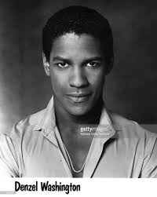
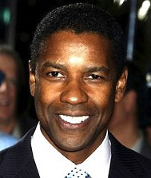

Danzel washington Jr.also known as Danzel Hayes Washignton was born on December 28, 1954. He was born in mount Vermon New York, His mother lennis "Lynne" born 1924 was a beauty parlor owner and operator born Georgia and partly rasied in Harlem, New York. His father, Danzel Hayes Washington Sr.(1909-1991), was from Buckingham County, Virginia, he was an ordained Pentecostal minister and an employee of the New York city water department as well as working at a local S.Klein department store.
Danzel washington attentded Pennington-Grimes elementary school in vermont until 1968. When he was 14, his parents divorced, and his mother sent him to a private preparatory school: Oakland Military Academy in New Windsor, New York. Washington later said, "That decision changed my life, because I wouldn't have survived in the direction I was going. The guys I was hanging out with at the time, my running buddies, have now done maybe 40 years combined in the penitentiary. They were nice guys but the street turned them into something different. After Oakland, he attended Mainland High School, a public high school in Daytona Beach, Florida, from 1970 to 1971.He was interested in attending Texas Tech University:"I grew up in the Boys Club in Mount Vernon, and we were the Red Raiders. So when I was in high school, I wanted to go to Texas Tech in Lubbock just because they were called the Red Raiders and their uniforms looked like ours." Washington earned a BA in Drama and Journalism from Fordham University in 1977. At Fordham, he played collegiate basketball as a guard under coach P.J. Carlesimo. After a period of indecision on which major to study and taking a semester off, Washington worked as creative arts director at an overnight summer camp: Camp Sloane YMCA in Lakeville, Connecticut. He participated in a staff talent show for the campers and a colleague suggested he try acting.
Returning to Fordham that fall with a renewed purpose, Washington enrolled at the Lincoln Center campus to study acting, where he was given the title roles in Eugene O'Neill's The Emperor Jones and Shakespeare's Othello. He then attended graduate school at the American Conservatory Theater in San Francisco, California, where he stayed for one year before returning to New York to begin a professional acting career.
In 2000, Washington appeared in the Disney film Remember the Titans which grossed over $100 million in the U.S. Washington is a devout Christian, and has considered becoming a preacher. He stated in 1999, "A part of me still says, 'Maybe, Denzel, you're supposed to preach. Maybe you're still compromising.' I've had an opportunity to play great men and, through their words, to preach. I take what talent I've been given seriously, and I want to use it for good. In 1995, he donated US$2.5 million to help build the new West Angeles Church of God in Christ facility in Los Angeles. Washington says he reads the Bible daily. Washington has served as the national spokesperson for Boys & Girls Clubs of America since 1993 and has appeared in public service announcements and awareness campaigns for the organization. In addition, he has served as a board member for Boys & Girls Clubs of America since 1995. Due to his philanthropic work with the Boys & Girls Club, PS 17X, a New York City Elementary School decided to officially name their school after Washington. In mid-2004, Washington visited Brooke Army Medical Center (BAMC) at Fort Sam Houston, where he participated in a Purple Heart ceremony, presenting medals to three Army soldiers recovering from wounds they received while stationed in Iraq. He also visited the fort's Fisher House facilities, and after learning that it had exceeded its capacity, made a substantial donation to the Fisher House Foundation. Washington's other charitable contributions include US$1 million to Nelson Mandela's Children's Fund in 1995 and US$1 million to Wiley College to resuscitate the college's debate team.
In 2012, Washington identified as an Independent voter. He supported Barack Obama in 2008. Washington has been a big fan of the Dallas Cowboys and Los Angeles Lakers since childhood. The Revolutionary Armed Forces of Colombia named Washington as one of three people (the others being directors Oliver Stone and Michael Moore) with whom they were willing to negotiate for the release of three defense contractors the group had held captive from 2003 to 2008. On May 18, 1991, Washington was awarded an honorary doctorate from his alma mater, Fordham University, for having "impressively succeeded in exploring the edge of his multifaceted talent". In 2011, he donated $2 million to Fordham for an endowed chair of the theater department, as well as US$250,000 to establish a theater-specific scholarship at the school. He also received an honorary Doctorate of Humanities from Morehouse College on May 20, 2007. and an honorary Doctor of Arts degree from the University of Pennsylvania on May 16, 2011. In 2008, Washington visited Israel with a delegation of African-American artists in honor of the state's 60th birthday. In 2010, he visited Israel again to meet with his friend, head of the Messianic Jews' congregation in Haifa. In April 2014, Washington presented at Broadway Cares/Equity Fights AIDS Easter Bonnet Competition with Bryan Cranston, Idina Menzel and Fran Drescher, after raising donations at his Broadway show A Raisin in the Sun.